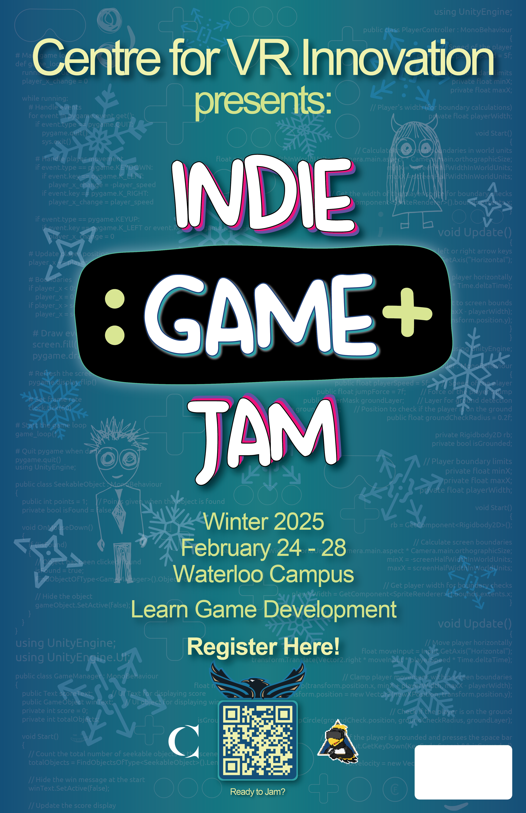

[graphic design]
Indie Game Jam
Promotional materials for Conestoga College's indie game jam, held every fall and winter term.
- role
- Designer
- timeline
- October 2024, February 2025
- tools
- Illustrator, Photoshop
- deliverables
- Posters, TV Graphic, Masthead
The Indie Game Jam was a recurring event hosted at Conestoga College's Waterloo campus, bringing students together to design and develop games over a five day period. I designed promotional materials for two separate jams, working within quick turnarounds and specific dimension requirements for print and digital displays.
[print]
Event posters


[screens]
Digital displays
Alongside the print posters, I created graphics for Conestoga's digital television network and promotional mastheads.